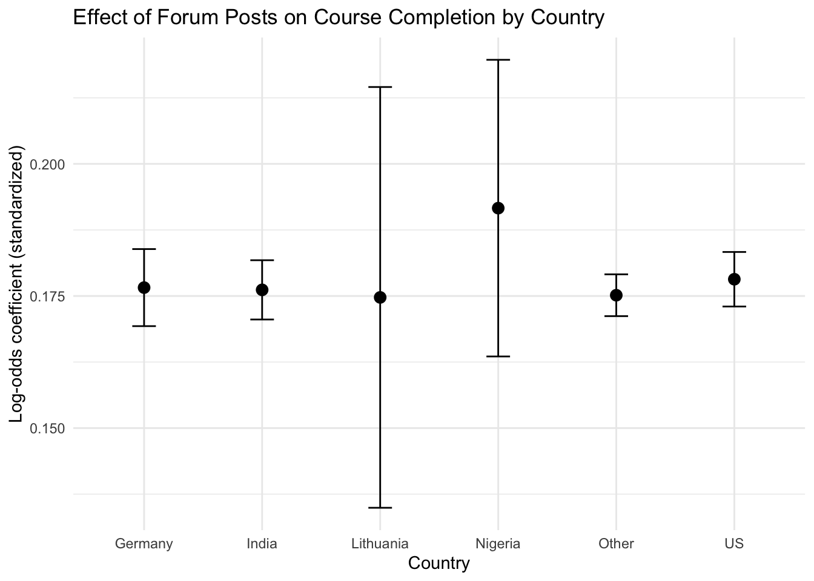

library(Rcpp)
#' C_moment function
#'
#' Takes in a vector and returns the kth central moment
#' central moment is defined as m = E[(x-mu)^k] =
#' m = 1/n*sum(xi - mean)^k
#'
#' @params v = vector
#' @params k = number in central moment
#' @returns moment = kth central moment
cppFunction("
double C_moment(NumericVector v, int k){
double sum = 0;
double n = v.length();
double mean = 0;
for (int j = 0; j < v.length(); ++j){
mean += v[j];
}
double m = mean / v.length();
for (int i = 0; i < v.length(); ++i){
double x = v[i] - m;
sum += std::pow(x, k);
}
return(sum/n);
}")HW6
Stats 506 Homework 6
Margaret Miles
Problem #1: Rcpp
In the notes, we defined a C_mean function. Using this as a template, implement a C_moment function that returns the kth central moment. Generate a vector of moderate length and show that you are able to replicate the results of e1071::moment.
Notes & Hints: Be cognizant of your scaling factor. Be sure to look at the arguments of e1071::moment.
Generate a vector of moderate length and show that you are able to replicate the results of e1071::moment.
library(e1071)
set.seed(123)
v <- rnorm(1000)
# test several moments
C_moment(v, 2) # variance (not sample variance!)[1] 0.9824755moment(v, order=2, center=TRUE)[1] 0.9824755C_moment(v, 3) # third central moment[1] 0.06358509moment(v, order=3, center=TRUE)[1] 0.06358509C_moment(v, 4) # fourth central moment[1] 2.8241moment(v, order=4, center=TRUE)[1] 2.8241Problem #2: Expanding on waldCI
- Write a class bootstrapWaldCI that produces a CI using bootstrap, similar to waldCI. It should inherit from waldCI using either the version from the solutions or your version - in either case, include the relevant code in this homework by using source() on a file containing the waldCI code.
The booststrapWaldCI constructor should take in a data set and a function that returns a scalar. E.g.
makeBootstrapCI(function(x) mean(x$myvar), data = mydata, reps = 100)
Add an optional level argument and an optional compute argument that accepts either “serial” (using no parallel processing), “parallel” (using either forks or sockets from parallel).
The constructor should carry out the bootstrap using the requested compute approach. Most functions can be inherited from waldCI, but add the additional function rebootstrap that performs a new bootstrap. rebootstrap should only take in one argument of a bootstrapWaldCI object.
Note: Be careful with inheritance and S4:
The @.Data slot only applies if the child class contains an S3 class; if it contains S4, it simply adds the childs slots alongside the parent slots. Slot names should not be re-used unless you’re explicltly overwriting existing slots.
source("waldCI.R")
library(parallel)
#create a new bootstrapWaldCI object based on waldCI
setClass(
"bootstrapWaldCI",
contains = "waldCI", # inherit level, mean, sterr and methods
slots = c(
bootStats = "numeric", # bootstrap statistics
reps = "integer", # number of resamples
compute = "character", # "serial" or "parallel"
statFun = "function", # function used to compute stat
data = "ANY" # original data
)
)
# serial bootstrap method
.bootstrap_serial <- function(statFun, data, reps) {
n <- NROW(data)
out <- numeric(reps)
for (i in seq_len(reps)) {
idx <- sample.int(n, size = n, replace = TRUE)
out[i] <- statFun(data[idx, , drop = FALSE])
}
out
}
# parallel bootstrap method
.bootstrap_parallel <- function(statFun, data, reps) {
if (!requireNamespace("parallel", quietly = TRUE)) {
stop("Package 'parallel' is required for compute = 'parallel'.")
}
n <- NROW(data)
cl <- parallel::makeCluster(parallel::detectCores())
on.exit(parallel::stopCluster(cl), add = TRUE)
parallel::clusterExport(
cl,
varlist = c("data", "statFun", "n"),
envir = environment()
)
res <- parallel::parLapply(
cl,
X = seq_len(reps),
fun = function(i) {
idx <- sample.int(n, size = n, replace = TRUE)
statFun(data[idx, , drop = FALSE])
}
)
unlist(res, use.names = FALSE)
}
# constructor
makeBootstrapCI <- function(statFun,
data,
reps = 100L,
level = 0.95,
compute = c("serial", "parallel")) {
stopifnot(is.function(statFun))
compute <- match.arg(compute)
reps <- as.integer(reps)
## original estimate on full data
est <- statFun(data)
## bootstrap
bootStats <- switch(
compute,
serial = .bootstrap_serial(statFun, data, reps),
parallel = .bootstrap_parallel(statFun, data, reps)
)
se_boot <- sd(bootStats)
## build child object
obj <- new("bootstrapWaldCI",
level = level,
mean = est,
sterr = se_boot,
bootStats = bootStats,
reps = reps,
compute = compute,
statFun = statFun,
data = data)
validObject(obj)
obj
}
# show method for bootstrapWaldCI
setMethod(
"show",
"bootstrapWaldCI",
function(object) {
## parent show: prints "X% CI: (lb, ub)"
callNextMethod()
cat("Bootstrap reps:", object@reps, "\n")
cat("Compute mode: ", object@compute, "\n", sep = "")
invisible(object)
}
)
setGeneric(
"rebootstrap",
function(object) standardGeneric("rebootstrap")
)[1] "rebootstrap"## define method for bootstrapWaldCI
setMethod(
"rebootstrap",
"bootstrapWaldCI",
function(object) {
statFun <- object@statFun
data <- object@data
reps <- object@reps
compute <- object@compute
level <- object@level
## recompute original estimate on full data
est <- statFun(data)
## new bootstrap run
bootStats <- switch(
compute,
serial = .bootstrap_serial(statFun, data, reps),
parallel = .bootstrap_parallel(statFun, data, reps)
)
se_boot <- sd(bootStats)
## update *parent* slots (waldCI)
object@mean <- est
object@sterr <- se_boot
object@level <- level
## update *child* slots
object@bootStats <- bootStats
validObject(object)
object
}
)- Show your code works by executing the following:
ci1 <- makeBootstrapCI(function(x) mean(x$y), ggplot2::diamonds, reps = 1000) ci1 rebootstrap(ci1)
ci1 <- makeBootstrapCI(function(x) mean(x$y),
ggplot2::diamonds,
reps = 1000)
ci195% CI: (5.724792, 5.74426)
Bootstrap reps: 1000
Compute mode: serialrebootstrap(ci1)95% CI: (5.724774, 5.744278)
Bootstrap reps: 1000
Compute mode: serialCompare and comment on the performance of the two compute methods.
## Serial
system.time(
ci1_serial <- makeBootstrapCI(
function(x) mean(x$y),
data = ggplot2::diamonds,
reps = 1000,
compute = "serial"
)
) user system elapsed
1.921 0.149 2.071 ## Parallel
system.time(
ci1_parallel <- makeBootstrapCI(
function(x) mean(x$y),
data = ggplot2::diamonds,
reps = 1000,
compute = "parallel"
)
) user system elapsed
0.058 0.024 4.478 Since this is just a mean and only 1000 reps, the serial is faster because it doesn’t need that extra time to set up the parrallel processing.
- Write a function called dispCoef that takes in data (based upon mtcars; it must take in a generic data for the bootstrap) and fits the model: mpg ~ cyl + disp + wt. It should return the coefficient associated with disp.
dispCoef <- function(data) {
fit <- lm(mpg ~ cyl + disp + wt, data = data)
coef(fit)[["disp"]]
}Execute the following:
ci2 <- makeBootstrapCI(dispCoef, mtcars, reps = 1000) ci2 rebootstrap(ci2)
ci2 <- makeBootstrapCI(dispCoef,
mtcars,
reps = 1000)
ci295% CI: (-0.01089334, 0.02583919)
Bootstrap reps: 1000
Compute mode: serialrebootstrap(ci2)95% CI: (-0.01103191, 0.02597776)
Bootstrap reps: 1000
Compute mode: serialCompare and comment on the performance of the two compute methods.
## Serial
system.time(
ci2_serial <- makeBootstrapCI(
dispCoef,
data = mtcars,
reps = 100000,
compute = "serial"
)
) user system elapsed
24.372 0.091 24.510 ## Parallel
system.time(
ci2_parallel <- makeBootstrapCI(
dispCoef,
data = mtcars,
reps = 100000,
compute = "parallel"
)
) user system elapsed
0.022 0.010 4.468 When it was only 1,000 reps the series and parrallel were comprable but similar because the regression just takes longer than a mean. But when I upped the process to 100,000 runs you can see that parrallel is just significantly faster than series.
Problem #3: Large data
Generate artificial data by running the code in this script. Do not include this script in your submitted PDF; either use source() or save/load to get the data into R.
# Load data-generating script
source("Problem3data.R")Data.frame `df` is 251.8 Mb # Assuming the script creates an object called 'bigdat' or similar
str(df)'data.frame': 3000000 obs. of 15 variables:
$ age : num 25.5 28.2 42.5 30.6 31 ...
$ country : Factor w/ 6 levels "Germany","India",..: 6 5 5 2 6 1 6 2 6 2 ...
$ device_type : Factor w/ 4 levels "desktop","laptop",..: 3 4 1 3 1 2 3 2 3 1 ...
$ employment_status : Factor w/ 4 levels "full_time","part_time",..: 3 3 3 1 2 1 1 2 1 1 ...
$ course_difficulty : Ord.factor w/ 3 levels "advanced"<"intermediate"<..: 3 2 3 3 3 2 2 3 3 2 ...
$ prior_gpa : num 3.01 2.72 3.86 2.71 2.52 ...
$ weekly_study_hours: num 5.33 8.46 9.81 5.6 6.71 ...
$ forum_posts : int 1 3 3 0 1 0 0 1 0 1 ...
$ quiz_attempts : int 3 2 1 7 1 2 1 1 0 2 ...
$ session_minutes : num 256 395 447 268 470 ...
$ paid_subscription : int 0 1 0 0 1 1 0 1 1 0 ...
$ final_score : num 55.5 53.6 75.1 63.9 71.4 ...
$ completed_course : int 0 1 0 1 0 0 1 0 1 1 ...
$ early_dropout : num 1 0 0 0 0 0 0 1 0 0 ...
$ time_to_dropout : num 5.95 NA NA NA NA ...- Fit one model per country. Fit a mixed effects logistic regression model, predicting course completion based upon prior GPA, number of forum posts, number of quiz attempts, and a random effect for device type. Standardize the predictors within each country. Generate some sort of visualization of the estimated coefficients for number of forum posts in each country.
library(dplyr)
Attaching package: 'dplyr'The following object is masked _by_ '.GlobalEnv':
containsThe following objects are masked from 'package:stats':
filter, lagThe following objects are masked from 'package:base':
intersect, setdiff, setequal, unionlibrary(lme4)Loading required package: Matrixlibrary(purrr)
library(tidyr)
Attaching package: 'tidyr'The following object is masked _by_ '.GlobalEnv':
containsThe following objects are masked from 'package:Matrix':
expand, pack, unpacklibrary(ggplot2)
Attaching package: 'ggplot2'The following object is masked from 'package:e1071':
element# fit one model per country
data_list <- split(df, df$country)
# fit mixed effects logistic regression model
# predicting course completion based upon prior GPA, number of forum posts, number of quiz attempts, and a random effect for device type.
model_country <- function(dat) {
# standardize each variable
dat <- dat %>%
mutate(
#prior gpa
std_gpa = scale(prior_gpa),
#number of forum posts
std_posts = scale(forum_posts),
#number of quiz attempts
std_attempt = scale(quiz_attempts)
)
# logistic regression with device time random effect
glmer(
completed_course ~ std_gpa + std_posts + std_attempt + (1 | device_type),
data = dat,
family = binomial(link = "logit")
)
}
model1 <- model_country(data_list[[1]])
model2 <- model_country(data_list[[2]])
model3 <- model_country(data_list[[3]])
model4 <- model_country(data_list[[4]])
model5 <- model_country(data_list[[5]])
model6 <- model_country(data_list[[6]])
#plot estimated coefficients for number of forum posts in each country
# extract std_posts coefficient and std error
models <- list(model1, model2, model3, model4, model5, model6)
posts_coef <- data.frame(
country = c("Germany","India","Lithuania","Nigeria","Other",
"US"),
coef = numeric(6),
se = numeric(6)
)
for(i in 1:6){
posts_coef$coef[i] <- fixef(models[[i]])["std_posts"]
posts_coef$se[i] <- sqrt(diag(vcov(models[[i]])))["std_posts"]
}
posts_coef country coef se
1 Germany 0.1765868 0.003646498
2 India 0.1761593 0.002804818
3 Lithuania 0.1747323 0.019908599
4 Nigeria 0.1916268 0.014035955
5 Other 0.1751442 0.001978480
6 US 0.1781707 0.002580410library(ggplot2)
ggplot(posts_coef, aes(x = country, y = coef)) +
geom_point(size = 3) +
geom_errorbar(aes(ymin = coef - 2*se, ymax = coef + 2*se), width = 0.2) +
theme_minimal() +
labs(
title = "Effect of Forum Posts on Course Completion by Country",
y = "Log-odds coefficient (standardized)",
x = "Country"
)
Report the running time (from system.time) for each of the 6 models.
# fit models with run times
run1 <- system.time({
model1 <- model_country(data_list[[1]])
})
run2 <- system.time({
model2 <- model_country(data_list[[2]])
})
run3 <- system.time({
model3 <- model_country(data_list[[3]])
})
run4 <- system.time({
model4 <- model_country(data_list[[4]])
})
run5 <- system.time({
model5 <- model_country(data_list[[5]])
})
run6 <- system.time({
model6 <- model_country(data_list[[6]])
})
print(as.character(data_list[[1]]$country[1]))[1] "Germany"run1 user system elapsed
18.688 0.958 19.660 print(as.character(data_list[[2]]$country[1]))[1] "India"run2 user system elapsed
29.065 1.885 30.956 print(as.character(data_list[[3]]$country[1]))[1] "Lithuania"run3 user system elapsed
0.542 0.111 0.654 print(as.character(data_list[[4]]$country[1]))[1] "Nigeria"run4 user system elapsed
1.220 0.168 1.387 print(as.character(data_list[[5]]$country[1]))[1] "Other"run5 user system elapsed
60.448 8.979 69.527 print(as.character(data_list[[6]]$country[1]))[1] "US"run6 user system elapsed
36.804 2.464 39.382 - Devise an approach that minimizes the running time of your script. Report the running time of your entire script (running models and estimating coefficients; no need for a new plot). Do not use a different package for the models. Show that the results match those from part a).
library(dplyr)
library(lme4)
library(purrr)
# Split data by country
data_list <- split(df, df$country)
fit_country <- function(dat) {
dat <- dat %>%
mutate(
std_gpa = scale(prior_gpa),
std_posts = scale(forum_posts),
std_attempt = scale(quiz_attempts)
)
glmer(
completed_course ~ std_gpa + std_posts + std_attempt + (1 | device_type),
data = dat,
family = binomial(link = "logit")
)
}
time2 <- system.time({
# Fit all 6 models in one line using map
models <- map(data_list, fit_country)
# Extract std_posts coefficient and SE
coef_df <- map_df(
names(models),
~ tibble(
country = .x,
std_posts_coef = fixef(models[[.x]])["std_posts"],
std_posts_se = sqrt(diag(vcov(models[[.x]])))["std_posts"]
)
)
coef_df
})
# time of faster version
print("Time of faster version: ")[1] "Time of faster version: "time2 user system elapsed
148.172 13.641 162.565 Problem #4: data.table
Repeat problem set 4, question 2, using data.table.
You can make the same or different decision as you did last time. You can also use or ignore the decisions I made in the solutions. As before, there is no “correct” answer (including those in the problem set 4 solutions).
Use the tidyverse for this problem. In particular, use piping and dplyr as much as you are able. Note: Use of any deprecated functions will result in a point loss.
Use the “ATP Matches” data from 2019 available at https://raw.githubusercontent.com/JeffSackmann/tennis_atp/refs/heads/master/atp_matches_2019.csv. This data tracks all Tennis matches. This data does not have documentation, so you’ll have to explore the data yourself to figure out it’s structure. Use it to answer the following questions. Your answers should show both the output from R that allows you to answer it, as well as a written answer.
tennis_matches <- read.csv("atp_matches_2019.csv")
library(skimr)
skim(tennis_matches)| Name | tennis_matches |
| Number of rows | 2806 |
| Number of columns | 49 |
| _______________________ | |
| Column type frequency: | |
| character | 14 |
| numeric | 35 |
| ________________________ | |
| Group variables | None |
Variable type: character
| skim_variable | n_missing | complete_rate | min | max | empty | n_unique | whitespace |
|---|---|---|---|---|---|---|---|
| tourney_id | 0 | 1 | 8 | 34 | 0 | 128 | 0 |
| tourney_name | 0 | 1 | 4 | 31 | 0 | 128 | 0 |
| surface | 0 | 1 | 4 | 5 | 0 | 3 | 0 |
| tourney_level | 0 | 1 | 1 | 1 | 0 | 5 | 0 |
| winner_entry | 0 | 1 | 0 | 3 | 2373 | 7 | 0 |
| winner_name | 0 | 1 | 5 | 27 | 0 | 242 | 0 |
| winner_hand | 0 | 1 | 1 | 1 | 0 | 3 | 0 |
| winner_ioc | 0 | 1 | 3 | 3 | 0 | 69 | 0 |
| loser_entry | 0 | 1 | 0 | 3 | 2152 | 7 | 0 |
| loser_name | 0 | 1 | 5 | 31 | 0 | 345 | 0 |
| loser_hand | 0 | 1 | 0 | 1 | 1 | 4 | 0 |
| loser_ioc | 0 | 1 | 3 | 3 | 0 | 74 | 0 |
| score | 0 | 1 | 3 | 30 | 0 | 1153 | 0 |
| round | 0 | 1 | 1 | 4 | 0 | 8 | 0 |
Variable type: numeric
| skim_variable | n_missing | complete_rate | mean | sd | p0 | p25 | p50 | p75 | p100 | hist |
|---|---|---|---|---|---|---|---|---|---|---|
| draw_size | 0 | 1.00 | 59.74 | 42.06 | 4.0 | 32.00 | 32.0 | 64.0 | 128.0 | ▁▇▃▁▅ |
| tourney_date | 0 | 1.00 | 20190305.49 | 1630.01 | 20181231.0 | 20190304.00 | 20190610.0 | 20190819.0 | 20191124.0 | ▁▁▁▁▇ |
| match_num | 0 | 1.00 | 288.28 | 217.74 | 1.0 | 247.00 | 279.0 | 291.0 | 1701.0 | ▇▁▁▁▁ |
| winner_id | 0 | 1.00 | 114844.34 | 23183.37 | 100644.0 | 104926.00 | 105732.0 | 111456.0 | 209188.0 | ▇▁▁▁▁ |
| winner_seed | 1680 | 0.40 | 7.82 | 7.13 | 1.0 | 3.00 | 6.0 | 10.0 | 33.0 | ▇▂▁▁▁ |
| winner_ht | 5 | 1.00 | 187.52 | 7.39 | 170.0 | 183.00 | 188.0 | 193.0 | 211.0 | ▂▇▇▃▁ |
| winner_age | 1 | 1.00 | 27.60 | 4.92 | 16.3 | 23.30 | 27.9 | 31.6 | 40.6 | ▃▇▇▇▁ |
| loser_id | 0 | 1.00 | 115522.87 | 24151.38 | 100644.0 | 105138.00 | 105815.0 | 111513.0 | 211415.0 | ▇▂▁▁▁ |
| loser_seed | 2096 | 0.25 | 8.66 | 7.39 | 1.0 | 4.00 | 6.0 | 11.0 | 33.0 | ▇▃▁▁▁ |
| loser_ht | 23 | 0.99 | 186.96 | 7.11 | 170.0 | 183.00 | 188.0 | 191.0 | 211.0 | ▂▇▇▂▁ |
| loser_age | 0 | 1.00 | 27.47 | 4.72 | 15.2 | 23.42 | 27.6 | 31.0 | 40.6 | ▁▆▇▅▁ |
| best_of | 0 | 1.00 | 3.36 | 0.77 | 3.0 | 3.00 | 3.0 | 3.0 | 5.0 | ▇▁▁▁▂ |
| minutes | 116 | 0.96 | 110.78 | 40.86 | 18.0 | 80.00 | 104.0 | 133.0 | 309.0 | ▃▇▃▁▁ |
| w_ace | 112 | 0.96 | 7.50 | 6.07 | 0.0 | 3.00 | 6.0 | 10.0 | 48.0 | ▇▂▁▁▁ |
| w_df | 112 | 0.96 | 2.76 | 2.43 | 0.0 | 1.00 | 2.0 | 4.0 | 26.0 | ▇▁▁▁▁ |
| w_svpt | 112 | 0.96 | 79.27 | 29.43 | 8.0 | 58.00 | 74.0 | 94.0 | 219.0 | ▂▇▃▁▁ |
| w_1stIn | 112 | 0.96 | 49.77 | 19.01 | 2.0 | 36.00 | 46.0 | 59.0 | 136.0 | ▁▇▃▁▁ |
| w_1stWon | 112 | 0.96 | 37.99 | 13.78 | 2.0 | 28.00 | 35.0 | 45.0 | 106.0 | ▁▇▃▁▁ |
| w_2ndWon | 112 | 0.96 | 16.37 | 6.85 | 1.0 | 12.00 | 15.0 | 20.0 | 56.0 | ▅▇▂▁▁ |
| w_SvGms | 112 | 0.96 | 12.80 | 4.24 | 1.0 | 10.00 | 12.0 | 15.0 | 34.0 | ▁▇▃▁▁ |
| w_bpSaved | 112 | 0.96 | 3.33 | 3.04 | 0.0 | 1.00 | 3.0 | 5.0 | 22.0 | ▇▂▁▁▁ |
| w_bpFaced | 112 | 0.96 | 4.81 | 3.95 | 0.0 | 2.00 | 4.0 | 7.0 | 27.0 | ▇▃▁▁▁ |
| l_ace | 112 | 0.96 | 5.79 | 5.63 | 0.0 | 2.00 | 4.0 | 8.0 | 67.0 | ▇▁▁▁▁ |
| l_df | 112 | 0.96 | 3.27 | 2.47 | 0.0 | 2.00 | 3.0 | 4.0 | 21.0 | ▇▂▁▁▁ |
| l_svpt | 112 | 0.96 | 82.45 | 28.95 | 11.0 | 61.00 | 77.0 | 98.0 | 219.0 | ▂▇▃▁▁ |
| l_1stIn | 112 | 0.96 | 50.65 | 19.29 | 3.0 | 37.00 | 47.0 | 61.0 | 153.0 | ▂▇▂▁▁ |
| l_1stWon | 112 | 0.96 | 34.26 | 14.57 | 1.0 | 24.00 | 32.0 | 42.0 | 100.0 | ▂▇▃▁▁ |
| l_2ndWon | 112 | 0.96 | 14.88 | 6.88 | 0.0 | 10.00 | 14.0 | 19.0 | 49.0 | ▃▇▂▁▁ |
| l_SvGms | 112 | 0.96 | 12.57 | 4.22 | 1.0 | 9.00 | 12.0 | 15.0 | 34.0 | ▁▇▃▁▁ |
| l_bpSaved | 112 | 0.96 | 4.77 | 3.30 | 0.0 | 2.00 | 4.0 | 7.0 | 23.0 | ▇▆▁▁▁ |
| l_bpFaced | 112 | 0.96 | 8.43 | 4.16 | 0.0 | 5.00 | 8.0 | 11.0 | 29.0 | ▃▇▃▁▁ |
| winner_rank | 8 | 1.00 | 63.88 | 81.71 | 1.0 | 19.00 | 47.0 | 78.0 | 1125.0 | ▇▁▁▁▁ |
| winner_rank_points | 8 | 1.00 | 1754.97 | 2065.67 | 6.0 | 698.50 | 1011.0 | 1802.5 | 12415.0 | ▇▁▁▁▁ |
| loser_rank | 41 | 0.99 | 85.83 | 103.00 | 1.0 | 34.00 | 62.0 | 99.0 | 1491.0 | ▇▁▁▁▁ |
| loser_rank_points | 41 | 0.99 | 1131.61 | 1179.62 | 2.0 | 573.00 | 860.0 | 1243.0 | 12355.0 | ▇▁▁▁▁ |
library(data.table)
Attaching package: 'data.table'The following object is masked from 'package:purrr':
transposeThe following objects are masked from 'package:dplyr':
between, first, last# Convert to data.table
setDT(tennis_matches)- How many tournaments took place in 2019?
# Convert date and extract year
tennis_matches[, tourney_date := as.character(tourney_date)]
tennis_matches[, year := as.numeric(substr(tourney_date, 1, 4))]
table(tennis_matches[,year])
2018 2019
85 2721 # there are a lot of davis cups, combine them into one
tourney_2019_davis <- tennis_matches[year == 2019 & grepl("Davis", tourney_name, ignore.case = TRUE)]
davis_tourneys <- uniqueN(tourney_2019_davis$tourney_id) # n_distinct equivalent
# now tournaments took place in 2019
tourn_2019 <- tennis_matches[year == 2019]
tot_tourneys <- uniqueN(tourn_2019$tourney_id)
# remove all but one davis tourney ID
total_2019 <- tot_tourneys - davis_tourneys + 1
print(total_2019)[1] 66Based on my R code, there were 66 tourneys in 2019.
- Did any player win more than one tournament? If so, how many players won more than one tournament, and how many tournaments did the most winning player(s) win?
# pull final round
finals <- tennis_matches[round == "F"]
# Count number of tournaments won per player
winner_counts <- finals[, .(tournaments_won = uniqueN(tourney_id)), by = winner_name]
# number of players that won 1< tournaments
multi_winners <- nrow(winner_counts[tournaments_won > 1])
# most winning player
top_winners <- winner_counts[tournaments_won == max(winner_counts$tournaments_won)]Assuming that every tourney has only one winner which is the winner of round “F” for final, and all tourneys have a distinct ID, there were 41 winners of tournaments, there were 12 winners with more than 1 win, and Dominic Thiem and Novak Djokovic won the most with 5.
- Is there any evidence that winners have more aces than losers? (If you address this with a hypothesis test, do not use base R functionality - continue to remain in the Tidyverse.)
# pull win aces
win_aces <- tennis_matches[, .(total_aces = sum(w_ace, na.rm = TRUE)),
by = winner_name]
win_aces[, role := "Winner"]
lose_aces <- tennis_matches[, .(total_aces = sum(l_ace, na.rm = TRUE)),
by = loser_name]
lose_aces[, role := "Loser"]
# Rename player columns to match
setnames(win_aces, "winner_name", "player")
setnames(lose_aces, "loser_name", "player")
# Combine winners and losers
aces_combined <- rbindlist(list(win_aces, lose_aces))
aces_combined player total_aces role
<char> <int> <char>
1: Kei Nishikori 102 Winner
2: Daniil Medvedev 511 Winner
3: Jo-Wilfried Tsonga 373 Winner
4: Jeremy Chardy 252 Winner
5: Alex De Minaur 179 Winner
---
583: Zsombor Piros 4 Loser
584: Peter Nagy 0 Loser
585: Gabor Borsos 3 Loser
586: David Szintai 7 Loser
587: Yibing Wu 5 Loser# hypothesis test
t.test(total_aces ~ role, data = aces_combined)
Welch Two Sample t-test
data: total_aces by role
t = -4.5303, df = 352.82, p-value = 8.07e-06
alternative hypothesis: true difference in means between group Loser and group Winner is not equal to 0
95 percent confidence interval:
-54.82773 -21.63412
sample estimates:
mean in group Loser mean in group Winner
45.23188 83.46281 The mean number of aces for winners was higher than for losers. The two-sample t-test gives a p-value of p = 8.07e-6, suggesting that there is significant evidence that winners serve more aces than losers.
- Identify the player(s) with the highest win-rate. (Note that this is NOT asking for the highest number of wins.) Restrict to players with at least 5 matches.
# find total wins for each person
total_wins <- tennis_matches[, .(wins = .N), by = winner_name]
# total losses
total_losses <- tennis_matches[, .(losses = .N), by = loser_name]
# Aggregate wins losses to find matches per player
setnames(total_wins, "winner_name", "player")
setnames(total_losses, "loser_name", "player")
player_stats <- merge(total_wins, total_losses, by = "player", all = TRUE)
player_stats[, matches_played := wins + losses]
# now find rate
player_stats[, win_rate := wins / matches_played]
# Restrict to players with at least 5 matches
player_stats_5 <- player_stats[matches_played >= 5]
# find players with highest win rates
top_players <- player_stats_5[win_rate == max(win_rate)]
top_playersKey: <player>
player wins losses matches_played win_rate
<char> <int> <int> <int> <num>
1: Rafael Nadal 60 9 69 0.8695652